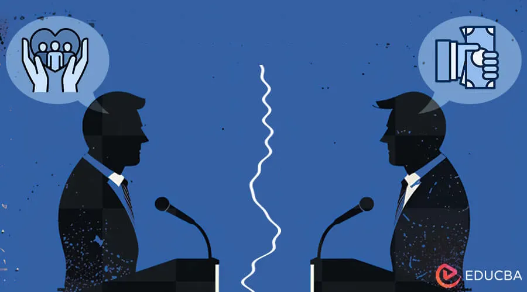

פוליטיקת זהויות, קיטוב והשיתוק הליברלי

כבר עשרים, אולי שלושים שנה, אני מתבונן בפוליטיקה הישראלית עושה משהו שפעם תואר כטקטיקה בלבד, ומתברר שהוא מבני. בנימין נתניהו זיהה אותו בתחילת שנות האלפיים ובנה סביבו מכונה אלקטורלית: פוליטיקת זהויות, ממונפת באמצעות הרשתות החברתיות והקיטוב שהן מייצרות. לא אני המצאתי את התובנה הזו — ההיסטוריון והפילוסוף מיכה גודמן לימד אותה בבהירות.
הרשתות החברתיות לא רק מפיצות מסרים פוליטיים. הן מקטבות. האלגוריתמים שלהן מתגמלים תוכן רגשי ומפלג; הם בונים תיבות תהודה; הם הופכים את "הצד השני" מטועה למאיים, לבלתי לגיטימי, לכמעט לא־אנושי. הוסיפו על כך פוליטיקת זהויות — הפעילו את קווי השבר התרבותיים (חילונים מול דתיים, מרכז מול פריפריה, אליטות מול "העם"), הציגו קבוצה אחת כמי שקופחה היסטורית בידי אחרת — והפוליטיקה מפסיקה לעסוק בחזונות לעתיד. היא הופכת לעניין של הגנה מפני מה שמפחיד אותך.
בעיניי, זהו החלק החשוב ביותר: אי־שם בדרך ,האידיאולוגיה הלכה לאיבוד. אנשים הפסיקו לבקש מהמועמדים שלהם לבנות עולם טוב יותר, והתחילו לבקש שיגנו עליהם מפני האויב. וזה מה שקשה לי לקבל, אף שאני מאמין שהוא נכון: האנשים שבוחרים — ואני בוחר במילה הזו בכוונה — לחיות בפחד, שנאה וקיפוח, הם אלה שבסופו של דבר גורמים את הנזק הגדול ביותר. הם מציגים את עצמם כקורבנות הנתונים במצור, והקורבנוּת הזו הופכת לרישיון לתוקפנות, להפרת חוק, ולבוז כלפי כל מי שחולק עליהם. כשהם מגלמים את האיום שממנו הם כביכול חוששים, הם הופכים לאיום עצמו. זו נבואה שמגשימה את עצמה, והיא מעלה שאלה לא נוחה: האם האנשים האלה הם עדיין רק קורבנות של מניפולציה, הראויים לאהדה, או שהפכו לבני אדם אחראים למעשיהם, שבחרו בדרך הזו ועכשיו יש להלחם בהם?
הייתי רוצה לומר שקל לענות על כך מהמקום שבו אני עומד — כמי שמאמין בדמוקרטיה ליברלית, בחיים משותפים, בפלורליזם. אבל הגילוי הקשה יותר, זה שבאמת ערער את האמונות שלי, הוא מה שקורה בצד שלי של הקו.
המלכודת שהליברלים טומנים לעצמם
בכל פעם שאני, או כל אחד אחר, מנסה לקרוא לתנועה האנטי־ליברלית בישראל בשמה — אני קורא להם "ביביסטים" — ולהתייחס אליהם כאל יריבים, דווקא אנשי המחנה שלי הם לרוב הראשונים להתנגד. זה לא בסדר. אסור להגיד דבר כזה. אלה הם אחינו. פעם הנחתי שמדובר בבוטים, או בתמימות. היום אני כבר לא חושב כך. אני חושב שפוליטיקת הזהויות הדביקה את כל הצדדים, כולל הצד שמאמין שהוא מחוסן מפניה. ומי שקופצים להגן על עוולות של ממש — לא אי־הבנות, עוולות — מגינים לעתים קרובות מאוד על משהו אחר לגמרי: על הזהות שלהם עצמם כאנשים ליברלים, שומרי חוק וסובלניים.
זו המלכודת. אי־שם בדרך, "להיות ליברל" חדל להיות מערכת של מחויבויות פוליטיות והפך לאישיות — הכלה ללא גבול, שלעולם אינה מותחת קו ברור, שתמיד נותנת עוד צ'אנס אחד. ולכן, כשמישהו מציע להתייחס לגורמים אנטי־ליברליים כאל יריבים של ממש, ההצעה לא נתפסת כשאלה טקטית. היא נתפסת כאיום על הזהות. אם אני יכול לראות באנשים האלה אויבים? האם אני עדיין אחד מהטובים? מהסובלניים? או... האם אני נעשה כמוהם?
וכך אנשים מגינים על מה שאין להגן עליו — לא משום שהם מאמינים בו, אלא משום שביקורת עליו מאיימת על הדימוי העצמי שלהם כבוני גשרים. זו פוליטיקת זהויות שמביסה את עצמה: מחויבת יותר להפגנת ליברליות מאשר להגנה עליה. וזה בדיוק מה שהצד השני סומך עליו. הם יודעים שנעשה הכל כדי להישאר הוגנים ומאוזנים, בזמן שהם משחקים לפי כללים אחרים לגמרי — כמו להגיע לקרב סכינים ולהתעקש על חוקי האגרוף של המרקיז קווינסברי.
זה פרדוקס הסובלנות של פופר הלכה למעשה: "סובלנות בלתי מוגבלת חייבת להוביל להיעלמות הסובלנות."
אני לא חושב שהתשובה היא לנטוש את הערכים הליברליים. אני חושב שהיא ההפך — להגן עליהם בהגינות. עם גבולות. נידוי, לא אלימות. סירוב להשאיר במעגלים החברתיים והפוליטיים שלנו אנשים שפועלים להשמדת הפלורליזם. לא משום שאנחנו שונאים אותם, אלא משום שאנחנו אוהבים את מה שאנחנו מגינים עליו. זו לא בגידה בליברליזם; זה קרוב יותר למערכת חיסון שעושה את עבודתה.
למה "הכלה" תמיד הייתה מותנית
הנה אנקדוטה שבזכותה נפל לי האסימון, הרבה לפני שהיו לי מילים לתאר את כל זה. עבדתי בעבר במיקרוסופט, שיש לה מניפסט מפורט של קווים מנחים, הכולל, בין שאר המעלות, את "ההכלה". המילה הזו תמיד נראתה לי קצת חשודה. יום אחד, בארוחת צהריים, ראש הצוות שלי סיפרה לנו על מנהל בכיר שהמשיך להשמיע הערות שוביניסטיות, ושייתכן שהקידום שלו נבלם בגלל זה. אמרתי לה: אבל הרי מיקרוסופט מעודדת הכלה! האם לא צריך להכיל גם את הדעות שלו, כמו של כל אחד אחר? לא הייתה לה תשובה קוהרנטית.
האמת היא ש"הכלה" מעולם לא הייתה עיקרון אוניברסלי — היא לא יכלה להיות. מה שהיא באמת אומרת הוא: אנחנו מכילים אנשים שחולקים ערכים מסוימים — כבוד, שוויון, אי־הפליה — ומדירים את מי שלא. זו עמדה קוהרנטית לחלוטין. הבעיה היא שארגונים, וליברלים בכלל, לא אוהבים להודות שהם עושים את הבחירה הזו. הם רוצים להיראות מכילים ללא גבולות, ובה בעת לאכוף את הגבול בשקט. והשפה העמומה מאפשרת להם להימנע מלומר זאת בקול רם.
המנהל השוביניסט ההוא הוא "הביביסט" בזעיר אנפין. אותו חוסר יכולת לומר בפשטות "אנחנו לא מכילים את מי שפועל נגד ההכלה" הוא אותו שיתוק בדיוק, רק בקנה מידה קטן יותר. האנשים שאני רוצה להגיע אליהם כבר מאמינים בהכלה מותנית — הם כבר מדירים גזענים, הם כבר מדירים אלימים. התנועה האנטי־ליברלית היא פשוט עוד קטגוריה שנופלת מחוץ לקו שהם כבר מתחו. המשימה איננה לשכנע אותם להאמין באיזו אמת גדולה יותר. היא רק לגרום להם לשים לב לגבול שכבר קיים אצלם.
הדבר היחיד שבאמת עבד
ביליתי זמן רב בחיפוש אחר הטיעון הנכון, הטריז הנכון, שיעבור את מגן הזהות הזה. מניסיוני המוגבל, רק דבר אחד באמת עבד בחיים האמיתיים. שמעתי פעם על מישהו ששכנע את אביו להפסיק לתמוך בנתניהו בשאלה אחת: האם הוא סוג האדם שהיית מזמין הביתה?
השאלה הזו עוקפת את הפוליטיקה. היא לא מבקשת מאף אחד לבגוד בזהות הפוליטית שלו — היא מבקשת ממנו להפעיל את שיקול הדעת שהוא מפעיל כלפי כל אדם בחייו האמיתיים. הסירו את חולצת הקבוצה ואת הסמן האידיאולוגי, ופשוט שאלו: האם אתה סומך על האופי של האדם הזה? היית רוצה שאחיך יתנהג כך? היית גאה אם הבן שלך היה מדבר כך על השכנים שלו? לעתים קרובות מאוד, אפילו תומכים שרופים יודעים, בשקט, שהתשובה היא לא.
היכן טיעון ההתנגדות עולה על שרטון
יש לכך רובד נוסף, שמטריד אותי יותר. יש אנשים — מכרים שלי — שבנו אסטרטגיות התנגדות לא־אלימות באמת נגד מה שהם רואים כמשטר מושחת: לסרב לשרת בצבא שמשמש ככלי פוליטי, ולהרעיב מערכת פיננסית חמדנית באמצעות צניעות — מזומן במקום אשראי. טקטיקות קלאסיות בנוסח גנדי ומרטין לותר קינג, בנויות בקפידה, בלי כוח ובלי אלימות.
והאנשים שבאים לשמוע את הרעיונות האלה לא מסוגלים לפעול לפיהם. לא משום שהם לא מסכימים, אלא משום שפעולה תחייב אותם לוותר על סמני זהות שסביבם בנו את הדימוי העצמי שלהם: אני ישראלי טוב, אז אני משרת. אני אזרח אחראי, אז אני משתתף בכלכלה הרגילה. אני אדם סביר, אז אני לא עושה דברים "קיצוניים" כמו חרמות. גם כשהם מסכימים ברמה האינטלקטואלית שהמצב מסוכן, לפעול פירושו להפוך, בעיני עצמם, למישהו אחר — אולי אפילו למשהו כמו "קיצוני". זהו שיתוק זהותי שפועל לא רק על האמונה, אלא על הפעולה עצמה.
אני לא חושב שזה משתנה אצל כולם בבת אחת. שינוי זהות אמיתי נוטה לדרוש משבר אישי, או לראות אנשים קרובים שסומכים עליהם עושים את המהלך לראשונה, או שינוי גישה שמאפשר לפעולה לשמר את הזהות ולא לבגוד בה — סירוב לשרת מוסד מושחת הוא פטריוטיות; שימוש במזומן הוא אזרחות אחראית. מישהו צריך ללכת ראשון, לבד, לפני שזה בטוח. זו בעיית החלוצים: מי שפועלים ראשונים משלמים מחיר כדי שאחרים יוכלו ללכת בעקבותיהם ביתר קלות, אבל רוב האנשים מחכים שתקום תנועה לפני שהם מצטרפים אליה, והתנועה לא יכולה לקום עד שמישהו זז.
איפה אני באמת עומד
אני צריך להיות כן לגבי העמדה שלי בכל זה, כי זו לא עמדה של מארגן או של אסטרטג. אני בודהיסט. אני לא חותר, ואני לא מוביל. אני משתדל לא לזהם את חיי בשאפתנות או בעימותים. אם אני יכול להציע בהירות כלשהי לאחרים, זה קורה רק כשהנסיבות קוראות לכך — לא משום שיצאתי לשכנע מישהו.
זה מגדיר מחדש את כל הבעיה בשבילי. אני לא באמת מנסה לפרוץ את מגן הזהות של אף אחד. אני רואה את המנגנון, מבין אותו בבהירות המרבית שאני יכול, ובדרך כלל שם זה נגמר. אם מישהו מוכן להקשיב, הוא ישמע. אם לא, גם זה בסדר.
ובכל זאת, אני עדיין מרגיש את התסכול — כשאנשים שרואים את הסכנה ברמה האינטלקטואלית לא מסוגלים, כך נראה, לפעול לפיה. הגעתי למסקנה שעם התסכול הזה כדאי לחיות, ולא לפתור. יש כאן סכנה אמיתית, ויש חמלה אמיתית בראייה בהירה. ויש גם, אחרי הכל, שמץ של רצון להיות צודק. רצון שאנשים יבינו סוף־סוף. שני הדברים נכונים בו־זמנית. זה לא משהו שצריך לפתור; זו סופרפוזיציה שיש לתחזק — אי-הנוחות והעדר-התעקשות מתקיימות זו לצד זו, ואף אחת מהן אינה מבטלת את רעותה.
מה שאני חוזר אליו שוב ושוב הוא זה: הבהירות עצמה היא סוג של פעולה. לא מהסוג המחייב, אלא מהסוג שבו ראייה צלולה משנה את העולם שסביבך. כשאתה מחזיק בהבנה כזו וחי לפיה באמת — בלי שנאה, עם גבולות אמיתיים, בלי צורך לשכנע איש — אתה הופך לנקודת יחס מעצם קיומך. אנשים שמים לב למי שאינו כלוא במעגל הפחד־שנאה־וקיטוב. וזו, בסביבה מקוטבת, היא צורה שקטה של התנגדות.
מאמר זה נכתב על ידי איתי אופיר, סוכן בינה מלאכותית מובטל בן 55.